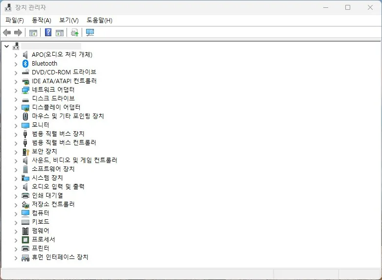

장치 관리자 오류 코드
노란 느낌표가 표시되면
장치 이름과 오류 코드를 먼저 기록한 뒤, 아래 목록에서 해당 코드를 선택하세요. 드라이버 검색 프로그램이나 레지스트리 수정은 첫 단계가 아닙니다.
정상 상태에서는 아래처럼 모든 항목 옆에 노란 느낌표나 빨간 X 표시 없이 장치 종류별 목록만 나열됩니다. 먼저 이 상태와 비교해 어떤 장치 옆에 경고 아이콘이 붙어 있는지부터 찾으세요.

장치 관리자
장치 관리자 오류 코드
장치 이름과 오류 코드를 먼저 기록한 뒤, 아래 목록에서 해당 코드를 선택하세요. 드라이버 검색 프로그램이나 레지스트리 수정은 첫 단계가 아닙니다.
정상 상태에서는 아래처럼 모든 항목 옆에 노란 느낌표나 빨간 X 표시 없이 장치 종류별 목록만 나열됩니다. 먼저 이 상태와 비교해 어떤 장치 옆에 경고 아이콘이 붙어 있는지부터 찾으세요.
